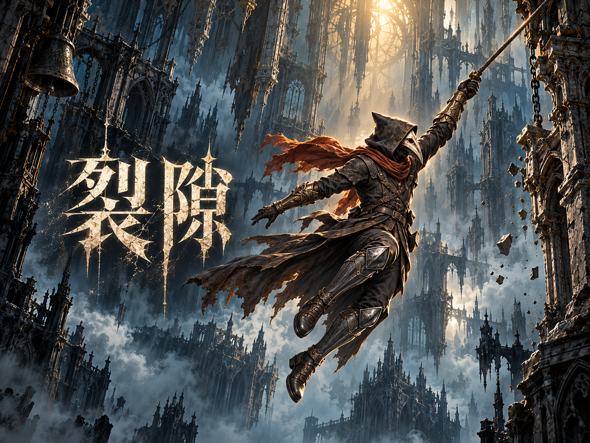
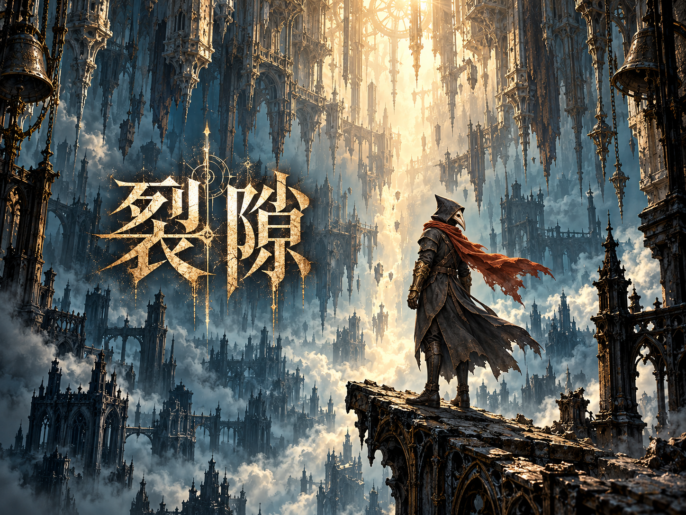
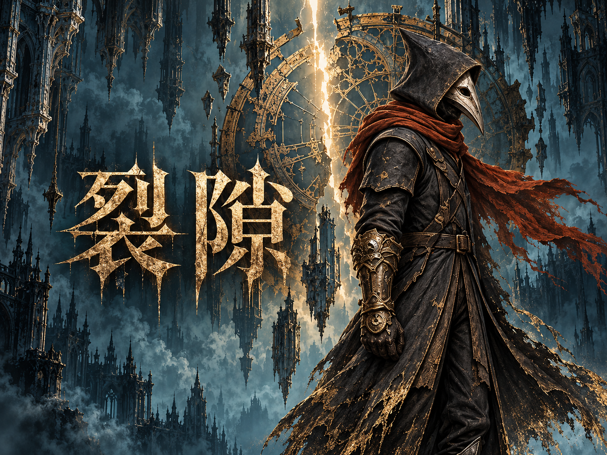

裂隙
同一位旅人，三种第一印象。点击大图查看原图，向下比较缩略显示。





三款均为内置 imagegen 生成的封面候选，依据现有主角与钟城美术制作。此页仅模拟缩略显示；选定后再验证 XBuilder 导入、保存和发布是否保留封面。
同一位旅人，三种第一印象。点击大图查看原图，向下比较缩略显示。



三款均为内置 imagegen 生成的封面候选，依据现有主角与钟城美术制作。此页仅模拟缩略显示；选定后再验证 XBuilder 导入、保存和发布是否保留封面。